Clinical Approach to the Foot & Ankle
- The ankle (talocrural) joint is a hinge: dorsiflexion and plantarflexion only. The talus is wider in front, so the ankle is most stable in dorsiflexion and loosest in plantarflexion. Inversion and eversion happen at the subtalar joint.
- The lateral ligaments (anterior talofibular, calcaneofibular, posterior talofibular) are thin and weak; the deltoid ligament on the medial side is thick and strong. So about 85% of sprains are lateral, from plantarflexion plus inversion. The anterior talofibular ligament is the most commonly sprained ligament in the body.
- Ottawa ankle rules. X-ray the ankle if there's malleolar-zone pain plus bone tenderness at the posterior edge or tip (lowest 6 cm) of either malleolus, or the patient can't bear weight for four steps both right after the injury and in the ED. X-ray the foot for midfoot pain plus tenderness at the base of the 5th metatarsal or the navicular, or the same weight-bearing test. A sprain gets RICE, early mobilization, strengthening and proprioception. Always check the proximal fibula (Maisonneuve).
- The spring ligament (sustentaculum tali to navicular) and the talar head form the keystone of the medial longitudinal arch; tibialis posterior is its main dynamic support. Tibialis posterior dysfunction leads to an acquired flat foot and the "too many toes" sign.
- Pulses: dorsalis pedis is just lateral to the extensor hallucis longus tendon; posterior tibial is between the medial malleolus and the Achilles. Skin: the superficial fibular nerve supplies most of the dorsum; the deep fibular, the first web space; the medial plantar, the medial 3½ toes; the lateral plantar, the lateral 1½.
- Plantar fasciitis: heel pain with the first morning steps, age 40–60, F>M. Achilles tendinopathy: runners who ramp up training. Both improve slowly with stretching and strengthening, not rest. Morton's neuroma sits between the 3rd and 4th metatarsals; it and bunions both need a wider toe box. The diabetic foot (neuropathy plus poor blood flow) ulcerates: prevent it with monofilament testing and daily foot checks.
Learning Objectives
- Identify the important functional anatomy of the lower extremity and foot, and the bony landmarks on plain radiographs.
- Trace the arterial supply and venous drainage and the nerves of the foot, and the consequences of lesions at different levels.
- Describe the clinical presentation and management of common foot and ankle problems: sprain, tendinopathies, plantar fasciitis, bunions, neuroma and diabetic foot ulcer.
- List and apply the Ottawa Foot and Ankle Rules to decide on imaging after an injury.
Dr. Charys Martin (anatomy) and Dr. Caitlin Cassidy (clinical), about 70 minutes over nine recordings. Each anatomy lesson is followed by a clinical one. Foot muscles get less detail than the hand on purpose: they work as a group to support stance and the arches. It's prep for Tuesday's Knee, Leg, Ankle & Foot lab, with 9.6, 9.7 Anatomy of the Leg and 9.8.
Anatomy of the Ankle and Foot
Bones, soft tissues, joints and ligaments, arches and neurovasculature.
Bones of the Foot (Review)
The tibia's medial malleolus and the fibula's lateral malleolus grip the talus; the lateral malleolus reaches about 2 cm lower. The seven tarsals, metatarsals and phalanges are covered in 9.7. The ones that matter most here: the talus (it passes weight from the tibia), the calcaneus (heel; its tuberosity takes the Achilles; its sustentaculum tali is a shelf for the talus and a pulley for flexor hallucis longus), the navicular (anchors the spring ligament) and the tuberosity of the 5th metatarsal (fibularis brevis; a sudden inversion can avulse it).
Knowledge check: label the bones
A calcaneus, B sustentaculum tali, C talus, D navicular, E calcaneal tuberosity, F tuberosity of the 5th metatarsal. The blue bone is the cuboid; the purple ones are the cuneiforms.
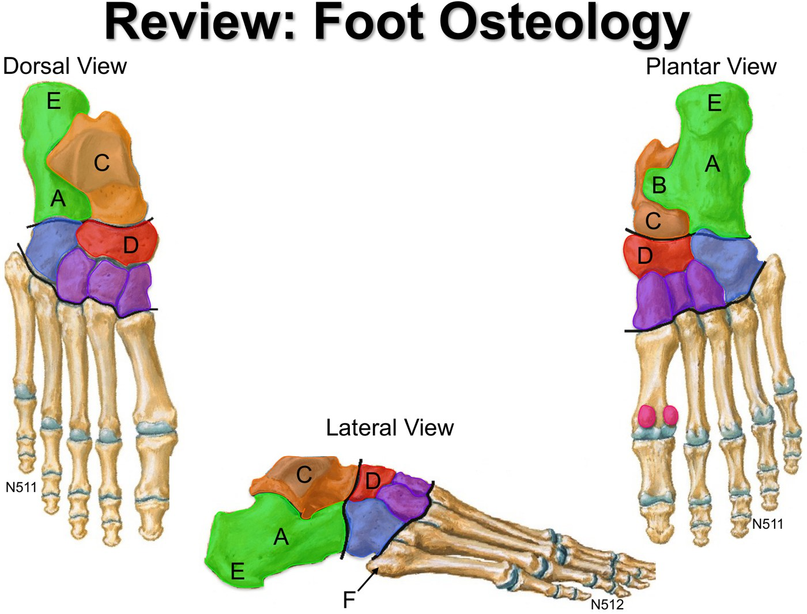
Soft Tissue of the Dorsum and Sole
Thickenings of deep fascia called retinacula strap the tendons down as they cross the ankle, so they don't bowstring. The superior extensor retinaculum runs tibia to fibula. The inferior extensor retinaculum is Y-shaped, with its stem on the calcaneus. The flexor retinaculum holds the deep posterior tendons behind the medial malleolus.
| Tendon | Where | Key points |
|---|---|---|
| Tibialis anterior | Dorsum, most medial | Broad attachment on the medial foot; dorsiflexes and inverts |
| Extensor digitorum longus | Dorsum, lateral to it | Splits into 4 tendons to the lateral four toes; works with extensor digitorum brevis |
| Extensor hallucis longus | Dorsum, to the big toe | Dorsiflexes the ankle and extends the big toe; works with extensor hallucis brevis. The dorsalis pedis pulse is just lateral to it. |
| Tibialis posterior ("Tom") | 1st tendon behind the medial malleolus | Deepest calf muscle; broad attachment on the medial foot (navicular and more); main dynamic support of the medial arch |
| Flexor digitorum longus ("Dick") | 2nd tendon behind the medial malleolus | Splits into 4 tendons that pass through a split in flexor digitorum brevis to the distal phalanges of toes 2–5. Quadratus plantae helps it by changing its line of pull. |
| Flexor hallucis longus ("Harry") | 3rd tendon, deepest and most posterior | Runs in a groove under the sustentaculum tali, crosses under flexor digitorum longus, then passes between the two heads of flexor hallucis brevis and the sesamoids to the big toe |
The two small dorsal muscles, extensor digitorum brevis (toes 2–4) and extensor hallucis brevis (big toe), both arise from the calcaneus and are supplied by the deep fibular nerve. The sole is built like the palm. The plantar fascia has a thick central part, the plantar aponeurosis, which protects the sole, supports the longitudinal arches and holds everything together. Under it are four layers of muscles that mirror the hand. You only need to know they exist and work as a group to support stance and keep up the arches, most of all at toe-off.
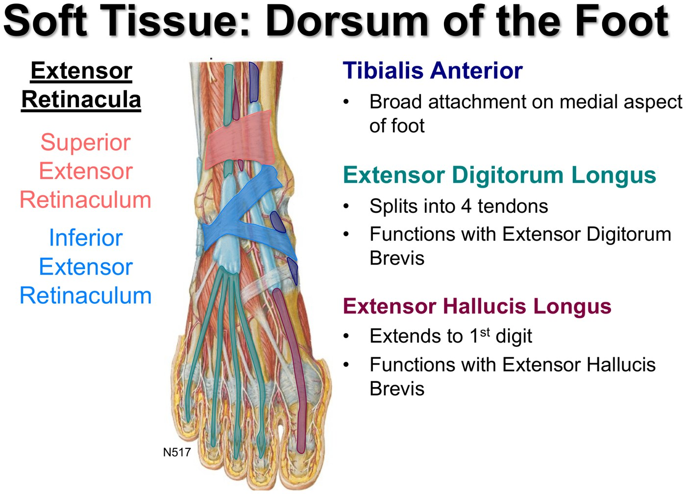
The dorsum: retinacula and the three anterior tendons. Slide from the deck (Netter).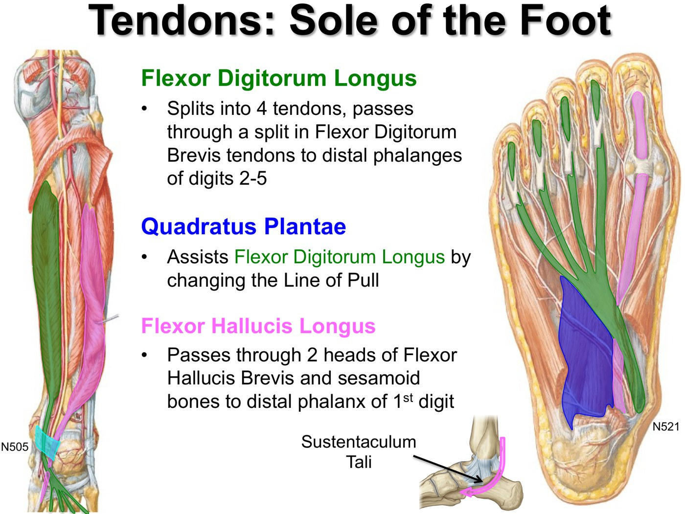
The long tendons in the sole, and flexor hallucis longus under the sustentaculum tali. Slide from the deck (Netter).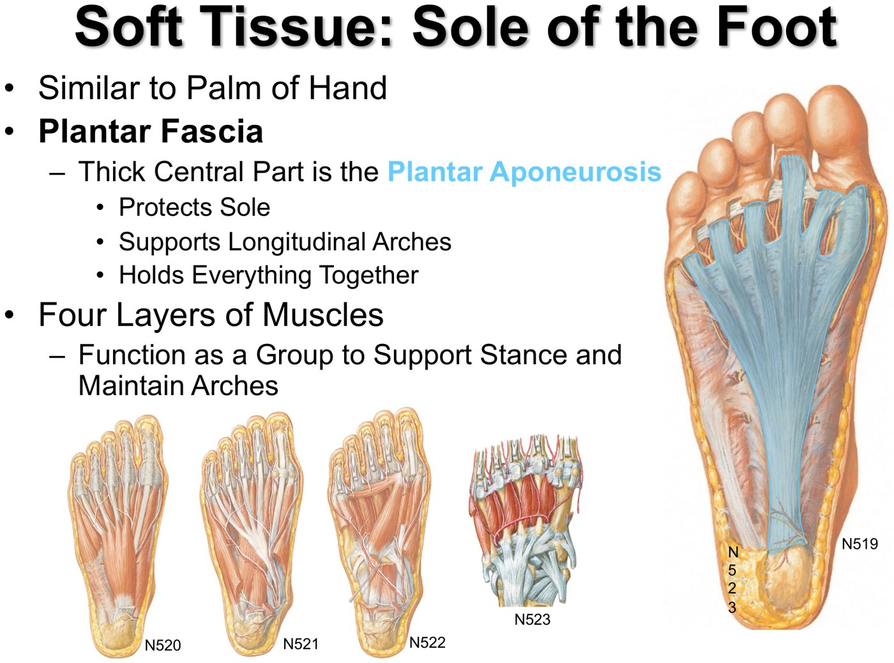
Knowledge check: the dissected ankle (medial view)
Landmark on the medial malleolus and count the tendons behind it: A tibialis posterior (first), B flexor digitorum longus (second; its belly crosses tibialis posterior above the malleolus, then it splits into four), C flexor hallucis longus (last and deepest, passing under the sustentaculum tali and crossing flexor digitorum longus to the big toe), D quadratus plantae, E flexor retinaculum (the connective tissue strapping them in). The cadaver photograph is left out.
Joints and Ligaments
| Joint | Type and bones | Movement | Support |
|---|---|---|---|
| Talocrural (ankle) | Hinge synovial: distal tibia and fibula around the trochlea of the talus | Dorsiflexion, plantarflexion | Capsule thin in front and behind; collateral ligaments on each side |
| Subtalar (talocalcaneal) | Plane synovial: under the talus, on top of the calcaneus | The bulk of inversion and eversion | Interosseous talocalcaneal ligaments |
| Transverse tarsal | Two joints in a line: calcaneocuboid (plane) laterally and the talonavicular part of the talocalcaneonavicular joint (ball and socket) medially | Helps with inversion and eversion | Plantar ligaments (spring, long and short plantar) |
The talus's trochlea is wider in front than behind. In dorsiflexion the wide part wedges between the malleoli, so the joint is most congruent and stable ("digging in your heels"). With the knee and hip extended too, you can stand quietly without muscle effort. In plantarflexion the narrow part sits in the mortise and the joint wobbles (stand on your toes and feel the invertors and evertors working). So most ankle injuries happen stepping down, foot plantarflexed, rolling into inversion. On the inversion side the ligaments are weak; eversion is blocked by the lower lateral malleolus and the strong deltoid ligament.
| Ankle ligaments | Parts | Key points |
|---|---|---|
| Lateral collateral | Three separate bands from the fibula: anterior talofibular, posterior talofibular, calcaneofibular | Relatively weak: only minor protection against inversion. The anterior talofibular is the most commonly sprained ligament in the body. |
| Medial collateral (deltoid) | Four parts from the medial malleolus that act as one thick sheet: anterior and posterior tibiotalar, tibiocalcaneal, tibionavicular | Thick and strong; stabilizes the ankle in eversion |
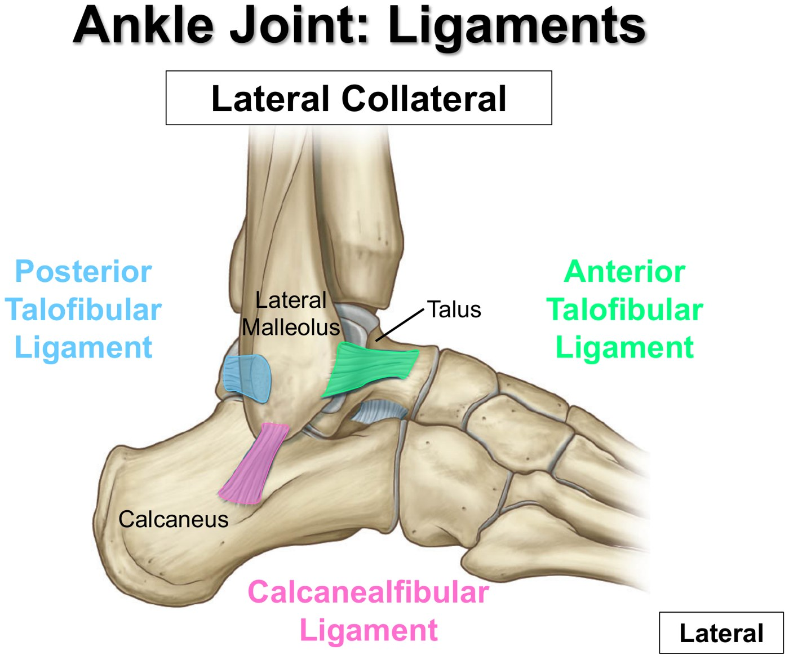
The lateral collateral ligament: three thin bands. Slide from the deck (Netter).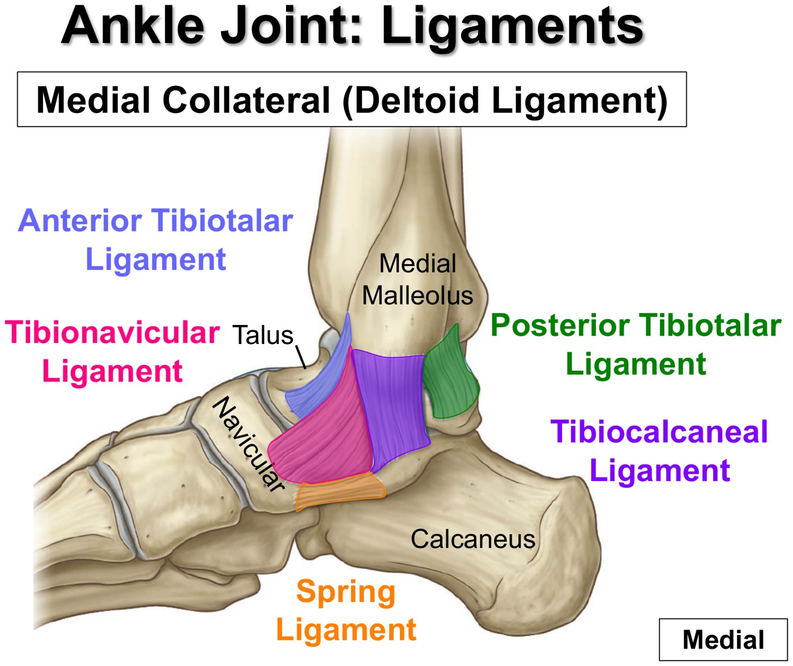
The deltoid ligament, with the spring ligament just below it. Slide from the deck (Netter).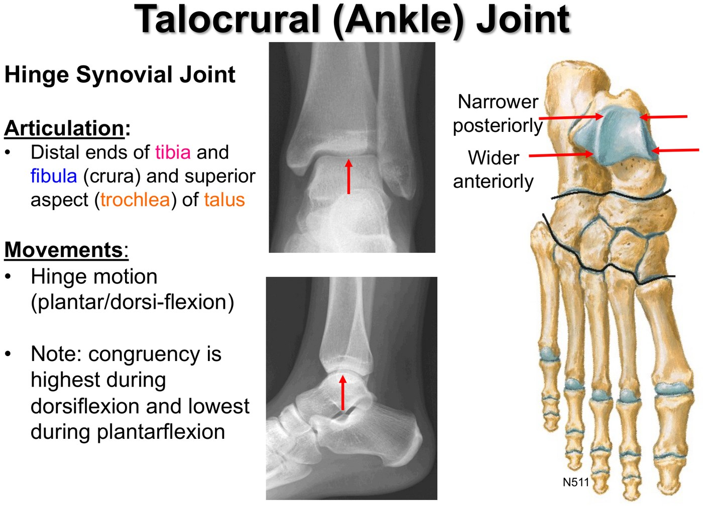
The talocrural joint: the trochlea is wider in front. Slide from the deck.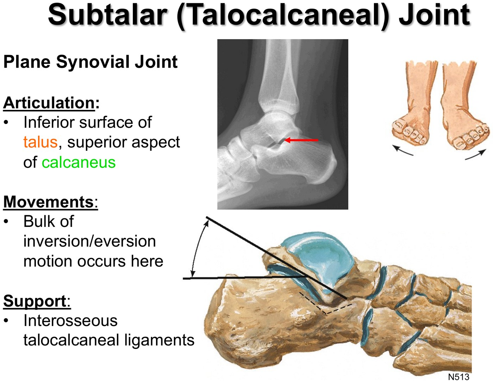
The subtalar joint: inversion and eversion. Slide from the deck (Netter).| Plantar ligament | Where | Key points |
|---|---|---|
| Plantar aponeurosis | The most superficial layer of the sole | If you can see the deep central muscles of the sole, it's already gone. |
| Long plantar ligament | Deep, at the level of the bones: calcaneus to the cuboid and the bases of the metatarsals | Runs the same way as the aponeurosis, so don't confuse them. Its fibres form a tunnel for the fibularis longus tendon. It helps keep up the longitudinal arch. |
| Short plantar (plantar calcaneocuboid) | Calcaneus to cuboid, between the long plantar and spring ligaments | Also supports the longitudinal arch. |
| Spring (plantar calcaneonavicular) | Sustentaculum tali to the navicular, filling the gap under the head of the talus | Holds up the talar head; with it, the keystone of the medial longitudinal arch. If it ruptures or stretches, the talar head drops between the calcaneus and navicular, the medial arch flattens and the forefoot swings into abduction and eversion. |
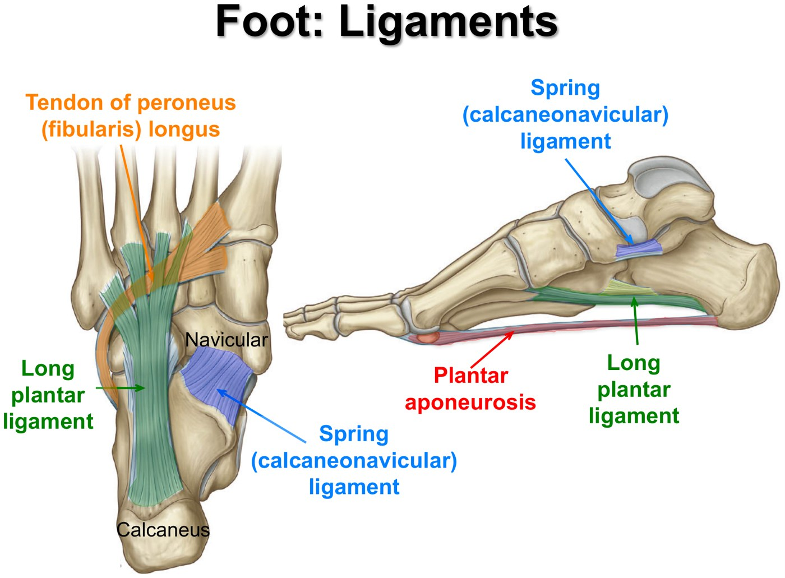
Long plantar and spring ligaments, and fibularis longus. Slide from the deck (Netter).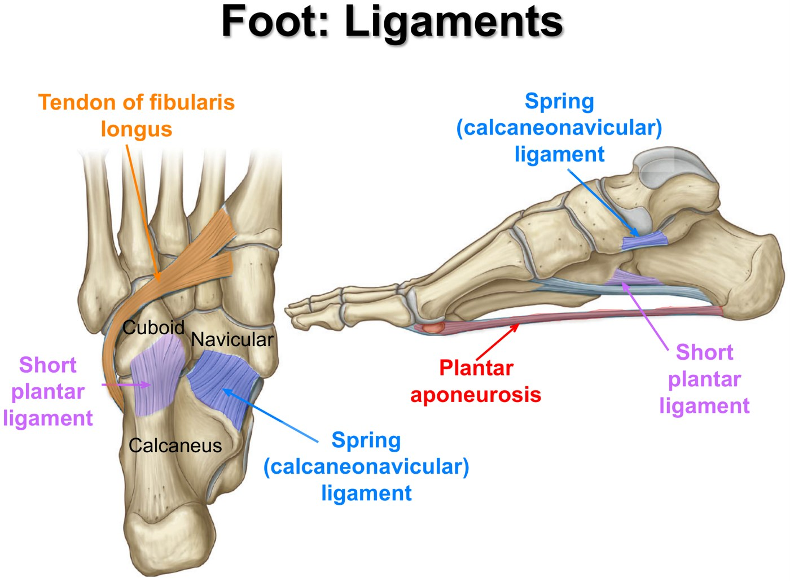
The short plantar ligament, between the two. Slide from the deck (Netter).Knowledge check: the ligament specimens
Landmark first: the phalanges are missing, so find the calcaneus, the big-toe metatarsal, the 5th metatarsal tuberosity (lateral) and the high, off-the-ground medial arch. Then: A spring ligament (medial, sustentaculum tali to navicular), B anterior talofibular, C deltoid, D calcaneofibular. The posterior talofibular can't be seen from that angle. The cadaver photographs are left out.
Arches and Weight Bearing
The arches spread the load, absorb shock and act as springboards: they flatten under weight and rebound when it's lifted.
| Arch | Bones | Character | Supported by |
|---|---|---|---|
| Medial longitudinal | Calcaneus, talus, navicular, the three cuneiforms, the medial three metatarsals | Higher; off the ground in stance. The talar head is the keystone. | The spring ligament; tibialis anterior, tibialis posterior (the main one) and fibularis longus |
| Lateral longitudinal | Calcaneus, cuboid, the lateral two metatarsals | Much flatter; rests on the ground | Foot ligaments |
| Transverse | Cuboid, cuneiforms, bases of the metatarsals; medial to lateral | The longitudinal arches are its pillars | Tibialis anterior, tibialis posterior and fibularis longus (the main one: it loops under the foot and pulls the medial side laterally) |
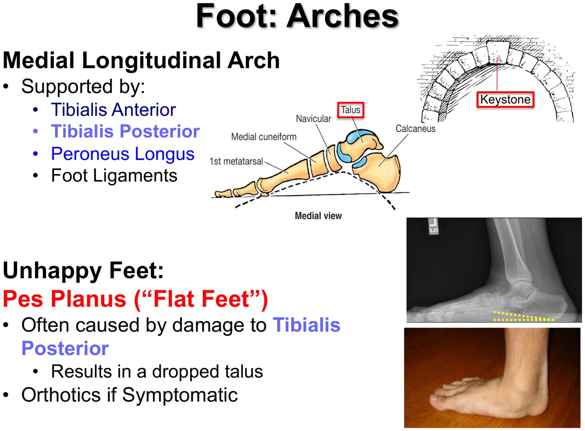
The medial arch, its keystone, and pes planus. Slide from the deck.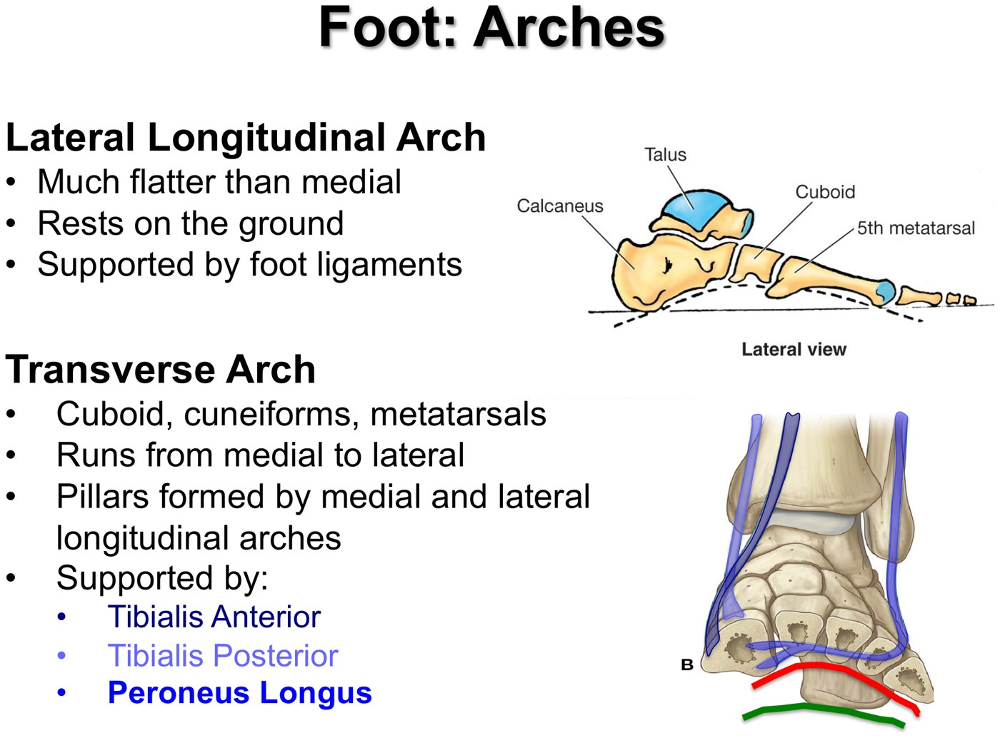
The lateral and transverse arches. Slide from the deck.Where the weight goes. Standing on both feet, half your body weight goes down each tibia to the talus. Half of that goes back to the calcaneus and half forward to the metatarsal heads, mostly the first (through its sesamoids) and the fifth, with a little on the middle three. If the transverse arch falls, the middle metatarsal heads take weight they shouldn't and a callus forms in the middle of the ball of the foot. If the medial arch falls, weight spreads along the whole medial foot. High heels shift load onto the metatarsal heads and strain the fibularis longus tendon as it tries to hold up the transverse arch. Dr. Martin: "life is too short for bad shoes."
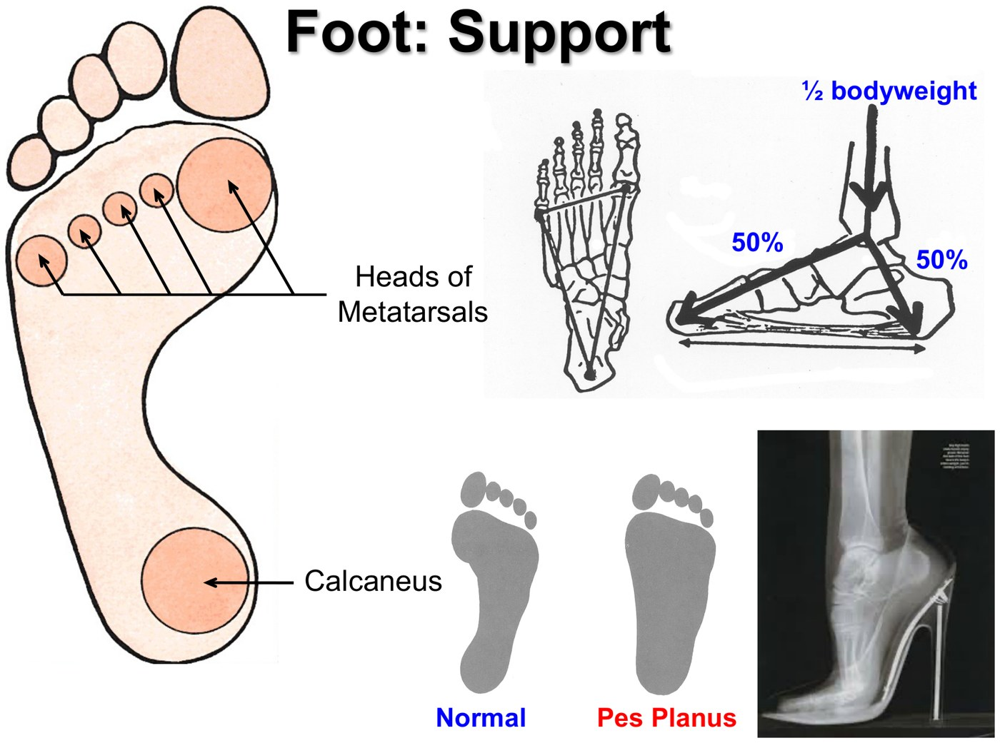
Pes planus (flat foot). The acquired kind often follows damage to or degeneration of tibialis posterior. Without it, the talar head drops inferiorly and medially, the spring ligament stretches and the medial arch flattens; the footprint shows the medial arch touching the ground. Usually asymptomatic; orthotics (arch support) and foot exercises if it hurts. See tibialis posterior dysfunction.
Arteries, Pulses and Nerves
| Artery | Course | Key points |
|---|---|---|
| Dorsalis pedis | The anterior tibial artery renamed as it crosses the ankle between the malleoli. Branches: lateral tarsal, arcuate (gives dorsal metatarsals 2–4), then the deep plantar artery and the 1st dorsal metatarsal. | The deep plantar artery dives between the 1st and 2nd metatarsals to the sole, where it completes the deep plantar arch. |
| Posterior tibial | Through the tarsal tunnel with "Tom, Dick and Harry", then splits into the medial and lateral plantar arteries, which run between the 1st and 2nd muscle layers | The lateral plantar curves across the foot as the deep plantar arch (most of it), which gives plantar metatarsal then plantar digital arteries, as in the hand. The medial plantar supplies the medial sole and big toe and also feeds the arch. |
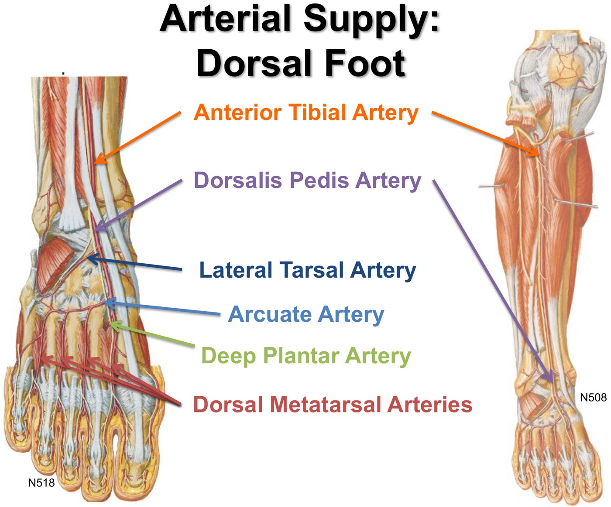
The dorsal foot: dorsalis pedis and its branches. Slide from the deck (Netter).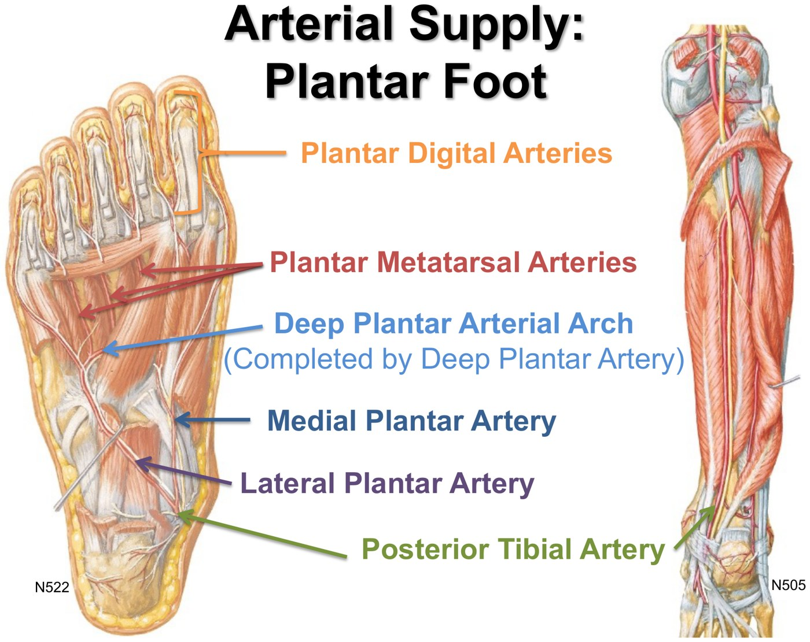
The sole: medial and lateral plantar arteries and the deep plantar arch. Slide from the deck (Netter).| Pulse | Where to feel it |
|---|---|
| Dorsalis pedis | Find the extensor hallucis longus tendon and go just lateral to it, compressing the artery against the tarsal bones. It's the pulse farthest from the heart, so it screens for vascular insufficiency: a weak or absent pulse usually means arterial disease. |
| Posterior tibial | At or just below the tarsal tunnel, between the medial malleolus and the calcaneal tendon. Invert the foot slightly to relax the flexor retinaculum. |
Take both sides at the same time and look for symmetry: pulse strength varies between people. Acute arterial occlusion gives the five P's: pain, pallor, paresthesia, paralysis, pulselessness. A puncture wound in the sole that hits the deep plantar arch bleeds heavily from both ends (rich anastomoses) and is hard to tie off. Venous blood drains from the plantar to the dorsal venous network and leaves via the great and small saphenous veins; lymph follows the veins, deep vessels mostly to the popliteal nodes.
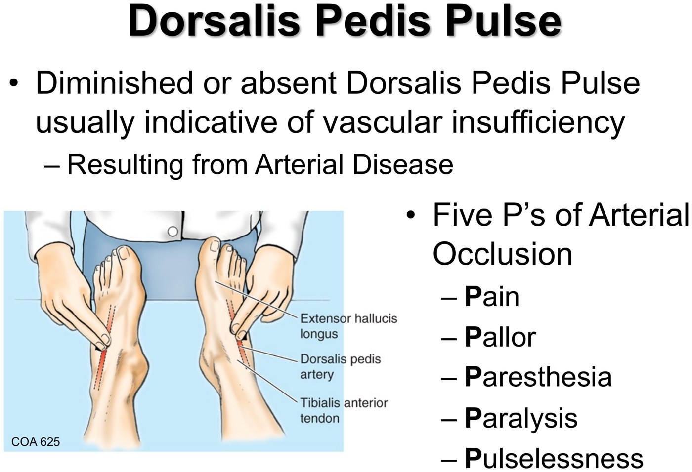
Dorsalis pedis, lateral to extensor hallucis longus. Slide from the deck (Clinically Oriented Anatomy).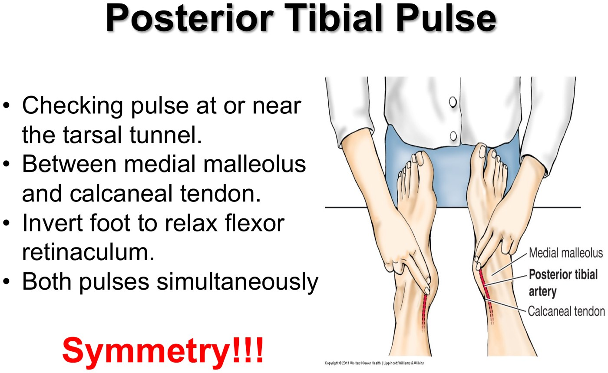
Posterior tibial, behind the medial malleolus; both sides at once. Slide from the deck.| Nerve | Motor | Skin |
|---|---|---|
| Superficial fibular (lateral compartment) | The evertors (in the leg) | Lateral leg and ankle and most of the dorsum of the foot |
| Deep fibular (anterior compartment, with dorsalis pedis) | The dorsiflexors and the dorsal foot muscles (extensor digitorum and hallucis brevis) | Only the first web space |
| Medial plantar (from the tibial nerve, after the tarsal tunnel) | A few medial sole muscles | Medial 3½ toes and the medial sole (like the median nerve) |
| Lateral plantar (from the tibial nerve) | All the other sole muscles | Lateral 1½ toes and the lateral sole (like the ulnar nerve) |
The plantar nerves run with the matching plantar arteries. The first web space tells you which branch is hurt: a common fibular lesion (at the fibular neck) numbs the dorsum and the web space; a superficial lesion spares the web space; a deep lesion numbs only the web space. For dermatome testing at the ankle, Dr. Martin uses L4 over the medial malleolus, L5 on the dorsum and S1 over the lateral malleolus.
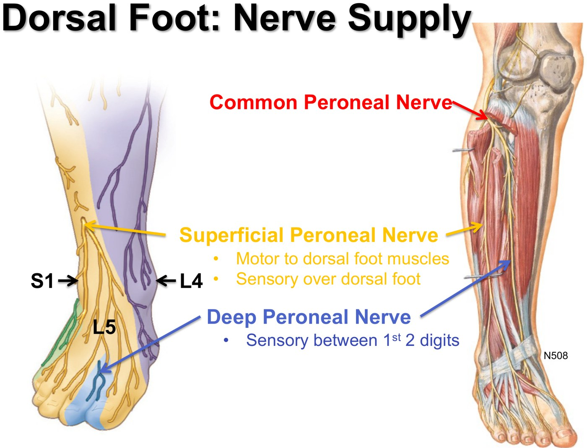
The fibular nerves on the dorsum (see the note below on the slide's "motor" label). Slide from the deck (Netter).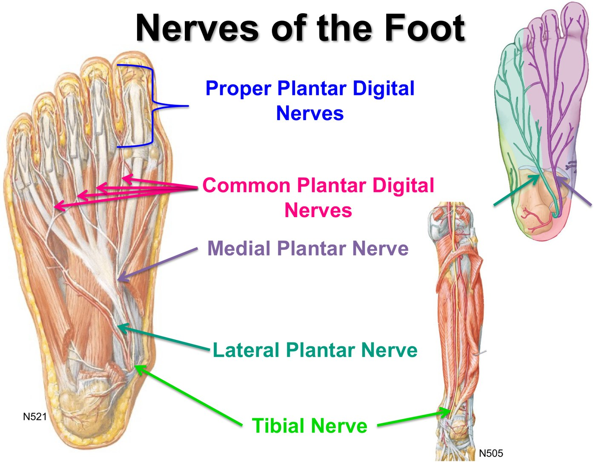
Medial and lateral plantar nerves and the sole's skin map. Slide from the deck (Netter).Knowledge checks
A nail through the sole between the bases of the 1st and 2nd metatarsals: which artery? → the module's key is the medial plantar artery ("on the medial side, between the 1st and 2nd metatarsals"). Not dorsalis pedis (on the dorsum, unlikely from below); not the lateral plantar (it runs laterally, then between the 4th and 5th). See the note below.
A climber lands on a rock and fractures the sustentaculum tali. Which tendon runs right under it? → flexor hallucis longus, which grooves the bone. Flexor digitorum longus crosses into the sole in front of it; tibialis posterior runs further forward, to the navicular; fibularis longus enters the foot laterally; tibialis anterior is on the dorsum.
Foot and Ankle Problems
Dr. Cassidy's clinical lessons: Achilles and plantar fascia, sprains and fractures, tibialis posterior, and the miscellaneous rest.
Achilles Tendinopathy and Rupture
| Achilles tendinopathy | |
|---|---|
| Who | Common in runners, especially after an increase in training |
| Presentation | Pain at the posterior heel, just above or right at the calcaneal insertion; tender; worse with passive dorsiflexion (stretching it), as in other tendinopathies |
| Education | Very important: set expectations for a long, slow improvement that takes consistent effort |
| Non-pharm | Activity modification (cut back the extra distance); footwear with no pressure on the insertion; a heel wedge, cautiously (it takes tension off early on, but long-term use can shorten the tendon); physio: stretching, eccentric strengthening (realigns the collagen), friction massage, extracorporeal shockwave therapy |
| Pharm | NSAIDs (topical or oral), especially when acute; possibly a topical nitroglycerin patch (more blood flow) |
| Surgery | Rare |
Rupture. Most common in active people in their 30s–40s, and increasingly in older people who stay active. Surgical repair and conservative treatment (cast or air-cast boot) are both reasonable. Surgery has a slightly lower re-rupture risk but adds surgical complications: infection, wound problems, scarring, sural nerve injury. Involve the patient: a highly active patient may lean toward surgery; a less active one toward conservative care.
Plantar Fasciitis
The plantar fascia protects the sole, supports the arches and holds everything together, which is a lot of work. When it's under too much tension, too often, it develops chronic inflammation at its insertion on the calcaneus.
| Plantar fasciitis | |
|---|---|
| Presentation | Pain at the anteromedial calcaneus on the first steps in the morning, and again with ongoing activity. Typically 40–60 years old, F>M. |
| Exam | Tender at the medial plantar calcaneus; worse with passive dorsiflexion; often a tight Achilles (less dorsiflexion range) |
| Education | Long, slow improvement; it can become chronic or recurrent |
| Non-pharm | Cushioned heel pad; heel lift or wedge (not long term); shoes with good arch support; weight loss; physio: plantar fascia and calf stretching, and strengthening the dynamic arch stabilizers (tibialis posterior, the foot's intrinsic muscles) so the fascia does less; night splints or a Strassburg sock to stretch it overnight |
| Pharm | Oral NSAIDs if severe; rarely a corticosteroid injection (painful) |
| Surgery | Very, very rarely a surgical release |
Knowledge check
A 53-year-old woman with heel pain that's worst first thing in the morning and with activity: which treatment would you not recommend? → two weeks of full-time air-cast boot. That's too much rest for a problem that gets better with active therapy. Achilles stretching, night splints, NSAIDs and weight loss (if appropriate) are all reasonable.
Ankle Sprains, Ottawa Rules and Fractures
A sprain is a ligament injury; a strain is a muscle or tendon injury. Up to 85% of sprains are lateral: the foot twists into inversion while plantarflexed, for example landing from a jump onto someone's foot or stepping in a hole. The ligaments go in order anterior talofibular > calcaneofibular > posterior talofibular. Each can be anything from stretched to partly or fully torn; when all three are fully torn, the ankle dislocates. Medial (deltoid) sprains are much less common, for example catching the foot on turf during a kick.
- Exam: swelling, ecchymosis, tenderness over the ligaments; the anterior drawer test (hold the leg, pull the foot forward) checks the anterior talofibular ligament.
- Do we image? Use the Ottawa rules.
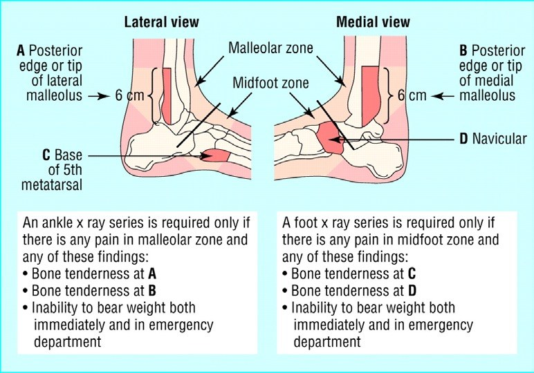
| X-ray series | Pain in | Plus any one of |
|---|---|---|
| Ankle | The malleolar zone | A bone tenderness at the posterior edge or tip of the lateral malleolus (lowest 6 cm); B the same on the medial malleolus; or inability to bear weight (4 steps) both immediately and in the ED |
| Foot | The midfoot zone | C tenderness at the base of the 5th metatarsal; D at the navicular; or inability to bear weight (4 steps) both immediately and in the ED |
Knowledge check
A 22-year-old landed awkwardly playing basketball this morning: lateral ankle pain, swelling, early bruising, tender only around the anterior talofibular ligament, and she walks into your office (painfully). X-ray? → No. No malleolar tenderness and she can bear weight, so the Ottawa rules are negative. Start conservative management of a likely lateral sprain.
| Sprain management | |
|---|---|
| Education | Most improve on their own, but ligaments heal slowly; discuss how to avoid recurrence |
| Non-pharm | RICE (rest, ice, compression, elevation), brief immobilization only if needed, early mobilization; physio for strengthening and proprioception. Bracing and taping help early, but the ankle shouldn't come to rely on them. |
| Pharm | Analgesics as needed: acetaminophen, NSAIDs |
| Surgery | Rare: ligament reconstruction for ongoing instability despite conservative care |
| When it's not just a sprain | What it is | Management |
|---|---|---|
| Unimalleolar | One malleolus fractured (here the lateral) | May be non-operative (boot or cast), depending on whether the talus is stable |
| Bimalleolar | Medial and lateral malleoli; usually forceful eversion (per the slide) | Typically surgical |
| Trimalleolar | Both malleoli plus the posterior malleolus (the back of the distal tibia) | Unstable; essentially always surgical |
| Maisonneuve | Forceful external rotation tears the ankle stabilizers, and the force travels up the interosseous membrane to break the proximal fibula. At the ankle: a medial malleolus avulsion or a deltoid rupture, plus a torn syndesmosis (the ligaments binding the distal tibia and fibula). The ankle film may look nearly normal. | Typically surgical. Always look at the proximal fibula after an ankle injury. |
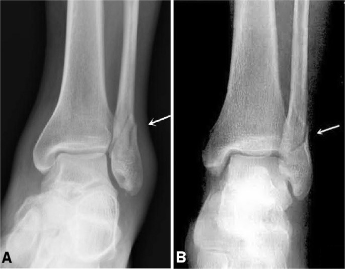
Unimalleolar: lateral malleolus (arrow). Slide from the deck.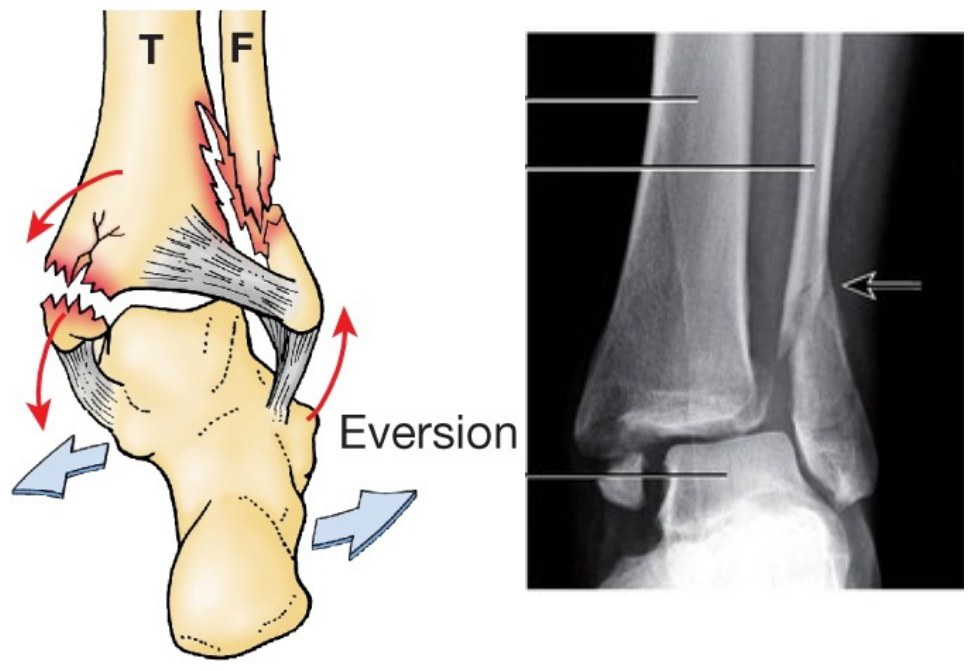
Bimalleolar, from eversion. Slide from the deck.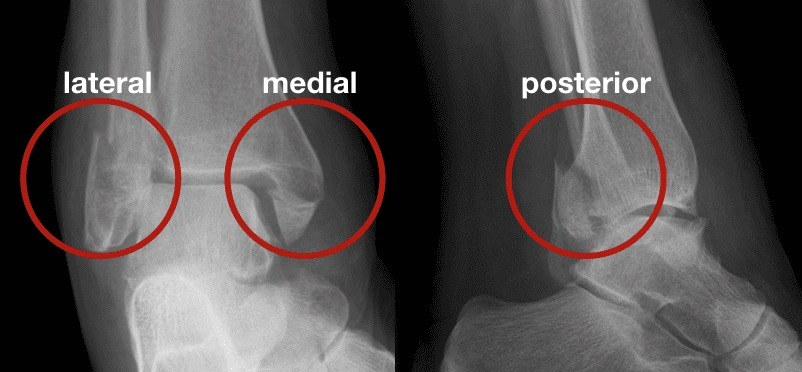
Trimalleolar: lateral, medial and posterior. Slide from the deck.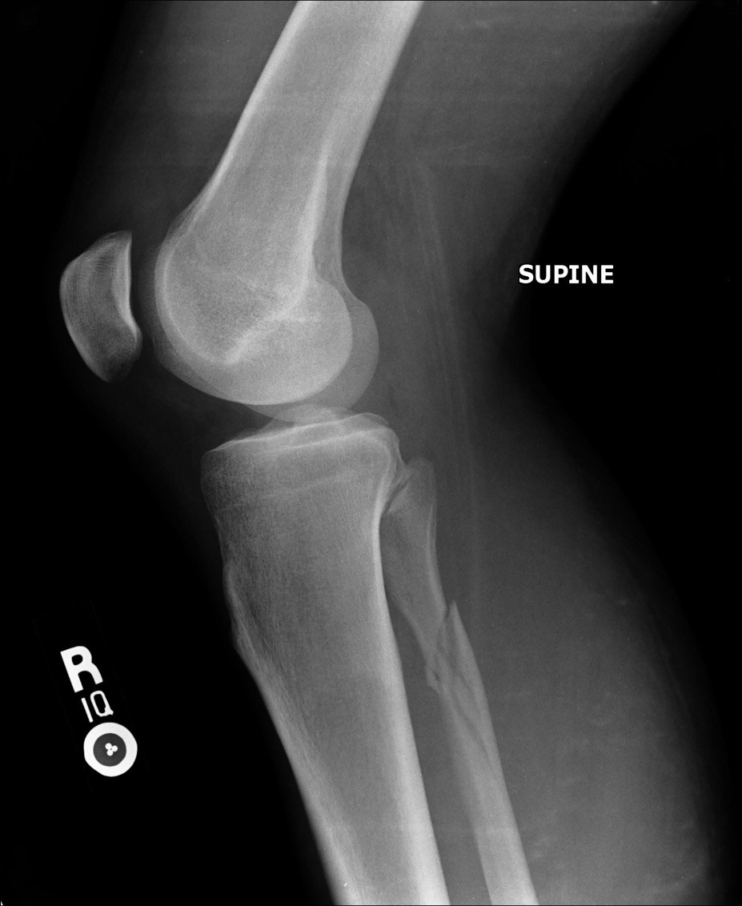
Maisonneuve: the fracture is up at the proximal fibula. Slide from the deck.Tibialis Posterior Dysfunction
Tibialis posterior holds up the arch, so when it fails, the problems spread from the foot up the leg. Its tendon is hypovascular just distal to the medial malleolus (like the rotator cuff where it rubs over bone): it's prone to injury there and heals poorly, so the damage tends to keep going. Contributing factors: trauma, steroid use, inflammatory arthritis, obesity, diabetes.
A strained, irritated tendon.
It hurts to use, and stops working in a coordinated way.
The arch drops but can still be popped back up on exam.
Left too long, the foot stays flat and can't be corrected.
"Too many toes" sign: stand behind the patient. Normally only a couple of toes peek out lateral to the heel. On the affected side the hindfoot falls into valgus and the forefoot swings out, so you see too many toes. (The slide's photograph is described rather than shown.)
| Management | |
|---|---|
| Education | Address risk factors: weight loss, glucose control |
| Non-pharm | RICE in the swollen phase; physio to strengthen tibialis posterior and the other arch stabilizers; orthoses: a foot orthotic (in the shoe; can prop up a flexible flat foot) or an ankle-foot orthosis (plastic up the back of the calf, a longer lever to control an ankle that has drifted into valgus). Corrective if the deformity is still flexible, accommodative once it's rigid. |
| Pharm | NSAIDs if needed (acute, swollen phase) |
| Surgery | Various procedures depending on how valgus and how rigid the foot has become |
Bunions, Morton's Neuroma and the Diabetic Foot
| Bunion (hallux valgus) | Morton's neuroma | |
|---|---|---|
| What | The 1st MTP joint points toward the midline while the toe angles away from it (valgus) | Perineural fibrosis (thickening) of a common digital nerve, usually between the 3rd and 4th metatarsals |
| Why | Multifactorial: footwear (partly why it's commoner in women) and anatomy (metatarsus varus, which the toe compensates for). Can cause secondary toe deformities. | Middle age, F>M; worse in high heels with narrow toe boxes, which load and squeeze the metatarsal heads |
| Symptoms | Pain at the medial 1st MTP and the tops of the toes in a tight shoe; poor toe-off, so the other toes work harder | Burning dysesthesia in the ball of the foot; worse with walking, better with rest |
| Exam | Is the deformity flexible or not? | Squeezing or palpating reproduces it; maybe sensory loss between or at the tips of the toes; no motor findings (digital nerves are purely sensory) |
| Treatment | Educate: treat early and consistently to avoid surgery. Toe spacers or positioning (only if it's flexible); a wider toe box. Little pharmacology (maybe a topical NSAID or acetaminophen; it isn't very inflammatory). Surgical realignment if function or pain is significant. | Educate and give ownership. Lower heels, a wider, taller toe box, a metatarsal pad in an orthotic (shifts pressure off the metatarsal heads). Neuropathic pain agents, a steroid injection; surgical excision. |
Knowledge check
Shoe advice for Morton's neuroma or hallux valgus? → a wider toe box. It takes pressure off the medial 1st MTP (bunion) and off the squeezed metatarsals (neuroma). A bigger shoe, looser laces, a more flexible upper or a stiffer sole don't address the problem.
The diabetic foot. Microvascular disease starves the skin and extracellular matrix and keeps the healing "soup" of white cells and macrophages from reaching injuries. It also starves the nerves: diabetic neuropathy hits the longest nerves first, so it starts in the feet.
- Can't feel your feet (sensory): shoes too small, cold without boots, banging the feet without noticing.
- Dry, cracked skin (autonomic): sweating is lost.
- Can't move them normally (motor): the intrinsic muscles weaken, the arches and shape change, and new bony prominences take pressure.
- The joints can break down: a Charcot (neuropathic) arthropathy.
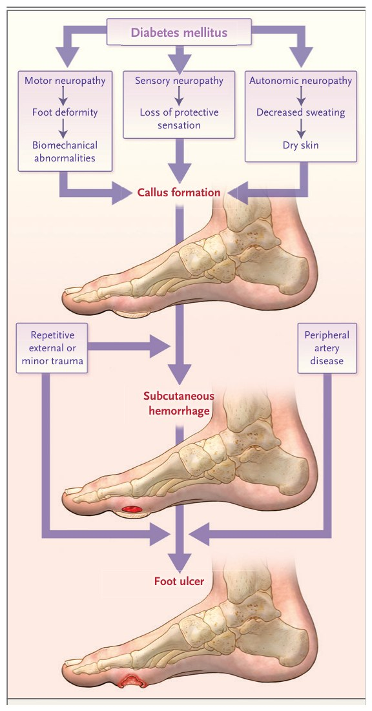
From diabetes to a foot ulcer. Slide from the deck (Armstrong 2017).Diabetic foot ulcers are a major complication, in about 15% of people with diabetes. They're multifactorial: an insensate, poorly perfused foot gets an ulcer it can't feel and can't heal. They need specialized care, are often colonized by many bacteria, and may need debridement or amputation.
Prevention is key:
- Monofilament sensation testing at every diabetic follow-up
- Appropriate socks and shoes
- Daily foot checks, with a long-handled mirror for the soles and between the toes
Built from the “Clinical Approach to Foot and Ankle” detailed slides, Dr. Martin's detailed notes, the nine recordings and the module's knowledge checks. Cadaver photographs and the patient photographs (swollen ankle, “too many toes”) are left out or described. Notes: (1) The nail knowledge check keys the medial plantar artery, but Dr. Martin's notes put the deep plantar artery (from dorsalis pedis) between the 1st and 2nd metatarsals, joining the lateral plantar artery to form the deep plantar arch. Know the module's answer, and know that the arch and the deep plantar artery are what bleed there. (2) The bimalleolar slide says forceful eversion; the recording says “forceful inversion”; the notes say severe inversion or eversion. This page follows the slide. (3) The dorsal nerve slide lists “motor to dorsal foot muscles” under the superficial fibular nerve; the notes and the extensor digitorum brevis slide give those muscles to the deep fibular nerve, which is correct. (4) The Maisonneuve slide lists “ATFL rupture or distal avulsion”. References (Radiopaedia and others, checked for these notes) describe a tear of the distal tibiofibular syndesmosis, whose front ligament is the anterior inferior tibiofibular, plus the interosseous membrane and the deltoid or medial malleolus. So the slide's “ATFL” most likely means that ligament, not the anterior talofibular. (5) The plantar fasciitis slide says “NSAIDs (oral; rarely by injection)”; the recording says the rare injection is a corticosteroid.